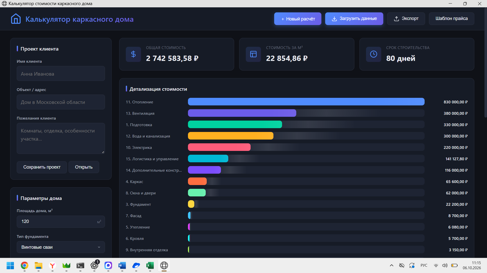
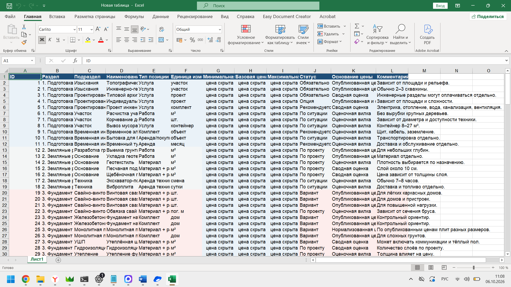

01 / Калькулятор[ 01 / Калькулятор ]
Калькулятор стоимости каркасного дома
Приложение для расчёта стоимости строительства по параметрам дома и актуальному прайсу.
- Задача
- Учитывать пожелания клиента и собирать подробную смету в одном интерфейсе.
- В проекте
- Параметры дома, детализация затрат, загрузка прайса из Excel/CSV, экспорт сметы и сохранение проектов.
Проект представлен скриншотами.
Подробнее: исходные данные проекта
В основе расчётов — справочник затрат: разделы строительства, наименования работ и материалов, единицы измерения и цены. В предоставленном примере цены скрыты.
